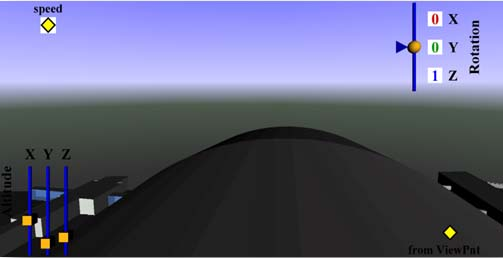
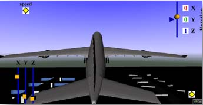
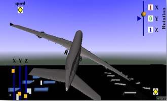
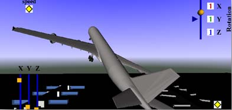

|
Simulation and Evacuation of Dulles
Airport Passengers in Emergency Scenario
Students: Tyreek Edwards and Jeff Ratte
Status: Current |


|
The projects goal is to present the Washington Dulles International Airport (IAD) in a Virtual Reality enviorment. The airport is situated in Chantilly, Virginia, USA. This application can be used for training a future pilot. It could also be used as an educational and training tool for depicting emergency scenarios. Inside the airport we will explore:
- Evacuation behavior
- Collective behavior
- Cooperative behavior
- Selfish behavior.
Outside the airport we will model and simulate
- Precautions during flight take off
- Plane taking-off on a runway with snow
- Undesirable object like bird comes in the way of flight
- Bird hitting the engine during take-off.
- Remodeling of parking area at the airport
Click Here to VIEW THE VRML PROJECT
|
 |
 |
View of controls to navigate the plane |
view from the pilots seat |
|  |
 |
Rotation on the z-axis
|
Rotation on the x-axis |
|  |
 |
Rotation on x and z-axis |
Rotation on the x, y, and z-axis |
The planned geometry consists of cars, taxi cabs, aircrafts, and people. The textures used are cement, and asphalt. Crowd animation and evacuation behaviors is currently under development. This application will allow the user to navigate through the environment using predefined camera views. The environment consists of the airport terminals, the parking lot, and the main building where bags are checked and tickets are purchased. The environment has the control tower as well. |
 |
 |
|
|
Virtual reality is important for this project because it simulates the evacuation of an airport, which can be used as a safety precaution by the airport. Also, it will save money on a real time simulation in an airport, because it would be infeasible to run the simulation during business hours.
Publications
- Sharma, S. and Otunba,S., “Virtual Reality as a Theme-Based Game Tool for Homeland Security Applications”, Proceedings of ACM Military Modeling & Simulation Symposium (MMS11), Boston, MA, USA, April 4 - 7, 2011. (Accepted)
- Sharma, S. and Shete, S., “Virtual City: A gaming tool for training and education”, Proceedings of ISCA 26th International Conference on Computers and their Applications, New Orleans, Louisiana, USA, March 23-25, 2011. (Accepted)
 VR LABORATORY (C) 2007-2009, ALL RIGHTS RESERVED
VR LABORATORY (C) 2007-2009, ALL RIGHTS RESERVED |

{kind=link}
{kind=link}
{kind=link}
{kind=link}